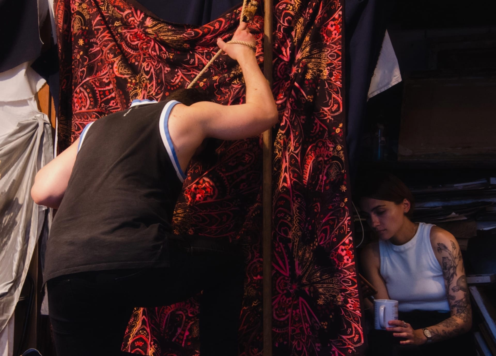
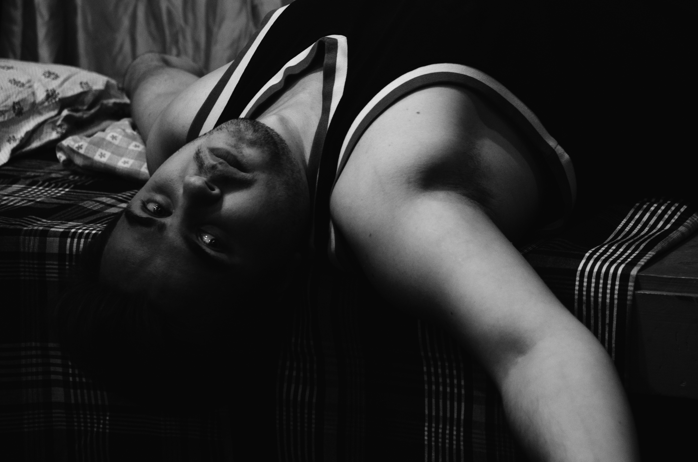
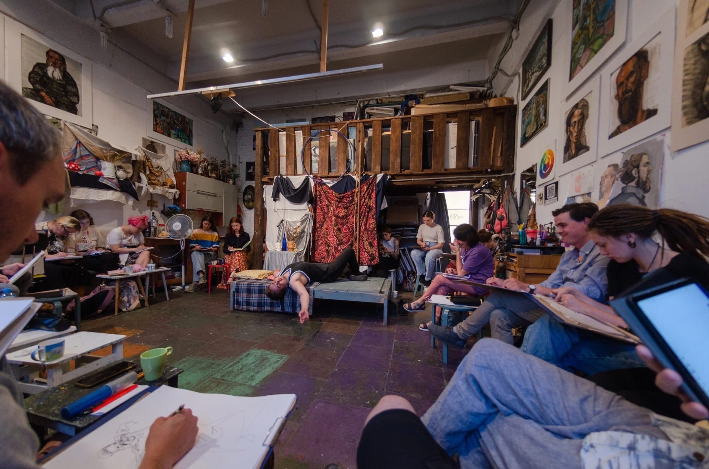

Уютное и доброжелательное место вертодром могут собраться любые почитатели искусства и порисовать для души.
Приятно после небольшого перерыва сново порисовать и окунуться в атмосферу искусства с головой, так ещё и пару зарисовок к себе в копилочку...
  Приятно после небольшого перерыва сново порисовать и окунуться в атмосферу искусства с головой, так ещё и пару зарисовок к себе в копилочку...